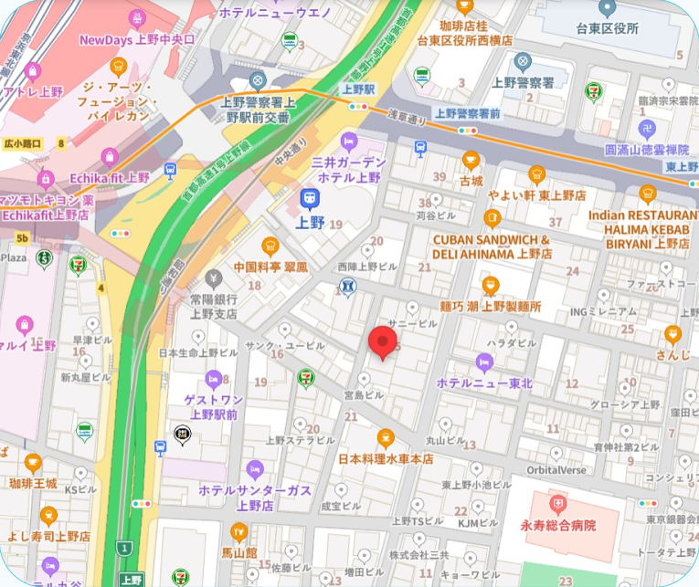

診療時間・所在地
佐藤医院では、患者様のご都合に合わせた診療を提供できるよう、柔軟な診療時間を設けております。以下をご確認のうえ、ご来院の際にご利用ください。
診療時間
| 診療時間 | 月 | 火 | 水 | 木 | 金 | 土 | 日 |
|---|---|---|---|---|---|---|---|
| 午前 9:00〜12:00 | ● | ● | ● | ／ | ● | ● | ／ |
| 午後 13:00〜18:00 | ● | ● | ● | ／ | ● | ／ | ／ |
●＝診療 ／＝休診
受付時間：午前 8:00〜11:00 ／ 午後 12:00〜17:00
休診日：木曜・土曜午後・日曜
※祝祭日も診療を行っておりますが、休診日もございますので、事前にご確認ください。
診療科目
内科
循環器科
呼吸器科
予防医療・健康診断
生活習慣病（高血圧、糖尿病等）の治療・管理
その他、ご不明点があればお電話またはメールでお問い合わせください。
所在地

〒123-4567
東京都台東区上野0-0-0
最寄駅：JR上野駅より徒歩5分
当院専用の無料駐車場 10台分あり
ご来院の際は、交通状況にご注意ください。最寄駅から徒歩5分の便利な立地です。
お問い合わせ
電話番号：00-0000-0000
FAX：00-0000-0000
メール：info@sato-clinic-test.jp